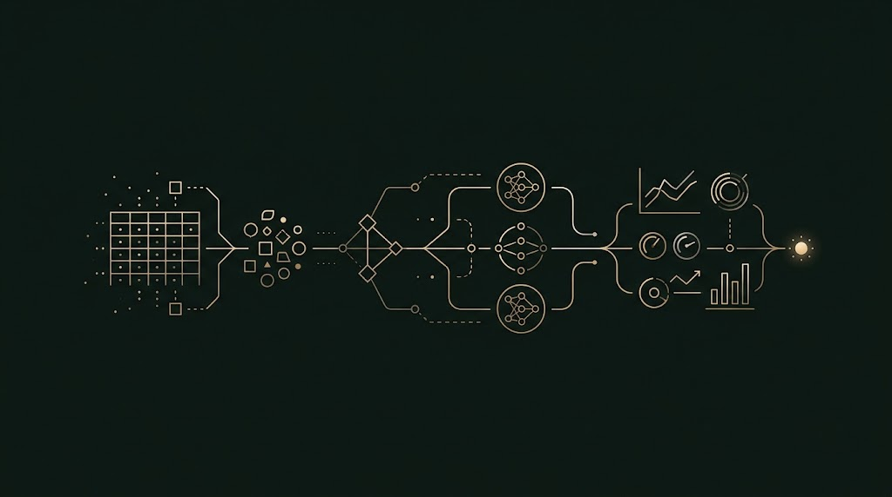

GitHub repository
Understanding and Discovering Data: End-to-End Tabular Workflow
A practical, code-first Python reference pipeline breaking down the end-to-end data preparation lifecycle into six structured, copy-paste ready modules. Tested on real tabular data (Ames Housing), it provides thoroughly annotated code snippets covering data cleaning (Parts 1 & 2), exploratory data analysis (Parts 1 & 2), and feature engineering (Parts 1 & 2)—designed for fast lookup, revision, and modular reuse across data science projects.
Open the repository